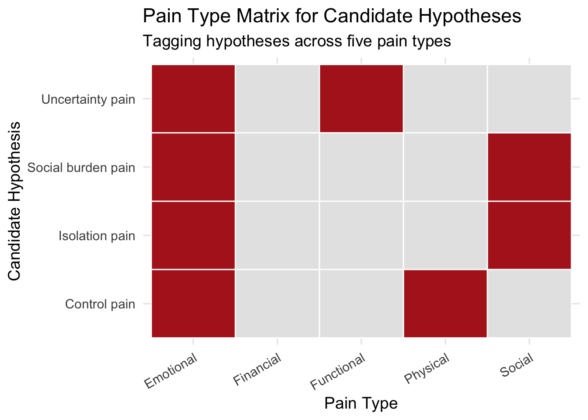

Hypothesize Pain — Maya Patel
Use abduction to move from experience map to pain hypotheses
Following the toolkit naming conventions, this file is named
exp-08-hypothesize-pain-2025-03-14.qmd.
1. Clarify the Unknown
Most Urgent Unknown:
What hidden pain best explains Maya’s recurring anxiety spikes during her evening commute home?Supporting Evidence:
- Clustered themes: Reassurance routines, Route choice & environment, Crowding & vigilance.
- Persona: Maya Patel.
- Experience Map: shows low anxiety leaving work, rising vigilance on train, and a peak when walking home at night.
- Clustered themes: Reassurance routines, Route choice & environment, Crowding & vigilance.
2. Generate Possible Explanations
From the evidence, we brainstormed multiple plausible pain hypotheses and tagged each with pain type(s):
- Uncertainty pain
- Hypothesis: Maya’s stress spikes when her environment feels unpredictable (dark streets, sudden detours).
- Pain types: Functional (lost time from rerouting), Emotional (anxiety from unpredictability).
- Hypothesis: Maya’s stress spikes when her environment feels unpredictable (dark streets, sudden detours).
- Isolation pain
- Hypothesis: Anxiety rises when she feels alone — being “watched” over text reduces but doesn’t erase the fear.
- Pain types: Emotional (fear when walking alone), Social (strain on roommate as safety contact).
- Hypothesis: Anxiety rises when she feels alone — being “watched” over text reduces but doesn’t erase the fear.
- Control pain
- Hypothesis: Crowds, erratic strangers, or blocked routes make Maya feel she has no control over her commute safety.
- Pain types: Emotional (stress from powerlessness), Physical (fatigue from constant vigilance).
- Hypothesis: Crowds, erratic strangers, or blocked routes make Maya feel she has no control over her commute safety.
- Social burden pain
- Hypothesis: Her check-in system creates secondary stress — she feels guilty for making her roommate worry.
- Pain types: Social (guilt, burden on others), Emotional (worry about straining relationships).
- Hypothesis: Her check-in system creates secondary stress — she feels guilty for making her roommate worry.
3. Check Alignment
- Uncertainty pain: Supported by route-avoidance behaviors (longer lit path) and her quotes about disruption.
- Isolation pain: Strongly matches reassurance routines; her texting is evidence.
- Control pain: Supported by crowded train behaviors (bag-holding, scanning, “keys in hand”).
- Social burden pain: Present, but less urgent; seems secondary compared to her direct anxieties.
4. Refine the List
We trimmed to three stronger candidates:
- Uncertainty pain (functional + emotional).
- Isolation pain (emotional + social).
- Control pain (emotional + physical).
Social burden pain is retained in the “refrigerator” but deprioritized for now.
5. Select the Most Plausible
Chosen hypothesis:
Maya experiences significant anxiety when commuting at night because she feels unsafe walking alone, especially in unpredictable or poorly lit environments.Pain types:
Emotional + Functional, with social overtones.Reason:
This explanation best integrates the emotional spike in her experience map, the route-choice cluster, and her reliance on reassurance routines.Refrigerated hypotheses:
- Control pain: revisit if subway crowding proves stronger in tests.
- Social burden pain: may resurface if reassurance routines become problematic.
- Control pain: revisit if subway crowding proves stronger in tests.
6. Next Steps
- Convert the chosen pain into a testable hypothesis (Diamond 2 → Test stage).
- Design pain validation experiments to measure frequency, urgency, and willingness to solve.
- Keep refrigerated hypotheses visible — surprises often point back to them.
Traceability
- From clusters: Commuting themes
- From persona: Maya Patel
- From experience map:
- Toolkit link: Abduction Guide